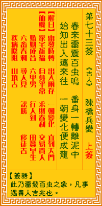

观音灵签第七十三签 【陈桥兵变】 |
 | |||
春雷震起蛰中虫 脱却凡尘出旧墉 忽遇风云交际处 自然变化得成龙 |
||||
| 【吉凶】 | 上上签 | 【宫位】 | 巳宫 | |
| 【签语】 | 此卦雷发百虫之象，凡事遇贵人吉兆也。 | |||
| 【解曰】 | 雷發時轉。出入兩存。一朝變化。直到天門。 | |||
| 【仙机】 | 此签家宅祈福，自身平常，求财春利，交易貴人，婚姻成合，行人到，六甲男，田蚕早生，六畜春利，寻人见，讼胜，移徙吉，病險阻，坟吉。 | |||
| 【详解】 | 春雷震醒了冬眠中的虫儿，离开了旧有的蛹茧卸去了束缚;待遇到风云交会之际，自然就能变化成龙了。 震开蛰月，思入风云，一好变态，直入天宫。此签蛰中变态之象，凡事变化则吉。 本签示之于弟子曰。是蛰中变态之象也。凡事变化则吉者。事事求变。舍旧图新。求合时潮。何必烦恼。一定可转机。多费心机。可有转变。君尔可知。功名富贵 迟速有时。待时而动则吉也。易言之。震开蛰月思入风云一好变态直入天宫。 此签有”伯乐相马”之意。提醒当事人，要沈得住气。韩愈《马说》内言道：”世有伯乐，然后有千里马。千里马常有，而伯乐不常有。”千里马可遇而不可求， 如何”遇”?在上位者，应有过人之见，细心深入地观察周遭的人，多花点时间倾听基层的声音。不以外表、学历等外在考虑来评断限制一个人，用人唯才。也许 千里马就在身边，却被自己忽略了呢。在基层者，也不要因为没遇到”伯乐”而丧志，仍应保持良好的工作能力与态度。只要自己不先放弃自己，相信一定能遇到 赏识重用的人，让你大展所长。 | |||
| 【典故】 | 春周世宗死后，由他七岁的儿子继位，他的母亲符太后掌管政权。赵匡胤为当时长官，许多亲信和兄弟都想造反夺权。这年年初三，匡胤等 人率领军队到陈桥驿宿营，当晚一部分将官发动兵变，声言拥赵匡胤为皇帝，并把一件黄袍加在他身上，山呼万岁。黄袍加身后，立即回开封，自己做了皇帝，改国号为宋，是位 宋太祖。宋朝在历史上有三百二十年天下 | |||